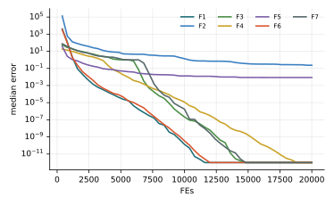

Chương 5 · Mục 5.1Chapter 5 · Section 5.1
Đàn ong nhân tạoArtificial Bee ColonyArtificial Bee Colony — ABCABC — dividing the work of finding nectar
Châu Văn Vân · PTITHCM
Mục tiêu bài họcLearning objectives
Sau chương này, bạn có thểAfter this chapter you will be able to
- Ánh xạ ba vai trò ong thợ, ong quan sát, ong trinh sát sang các bước tối ưu.Map the employed, onlooker and scout roles onto optimization steps.
- Viết công thức tìm lân cận vij và cơ chế chọn tham lam.Write the neighbour search vij and the greedy selection.
- Tính độ thích nghi và xác suất roulette của ong quan sát.Compute fitness values and onlooker roulette probabilities.
- Giải thích vai trò của limit trong cân bằng khám phá và khai thác.Explain how limit balances exploration and exploitation.
Tổng quanOverview
Ong mật chia việc đi tìm mậtHoney bees split up the job of foraging
- Do Dervis Karaboga đề xuất năm 2005, phát triển thêm cùng Basturk năm 2007.Proposed by Dervis Karaboga in 2005, developed further with Basturk in 2007.
- Ong thợ khai thác một nguồn hoa, về tổ múa “điệu lắc” để báo vị trí và độ ngọt của nguồn đó.Employed bees work a flower patch and perform a “waggle dance” at the hive to report its location and richness.
- Ong quan sát xem điệu múa rồi chọn nguồn để bay tới; nguồn càng ngọt càng được chọn nhiều.Onlooker bees watch the dances and pick a source to visit; richer sources get picked more often.
- Khi một nguồn cạn, ong thợ bỏ nó và thành ong trinh sát, bay đi tìm nguồn mới ngẫu nhiên.When a source runs dry, its bee abandons it and becomes a scout, searching randomly for a new one.
Ý tưởng cốt lõiCore idea
Nguồn hoa là lời giải, độ ngọt là độ thích nghiA food source is a solution, its nectar is the fitness
| Trong tự nhiênIn nature | Trong ABCIn ABC |
|---|---|
| Vị trí nguồn hoaLocation of a food source | Một lời giải xi ∈ ℝDA solution xi ∈ ℝD |
| Lượng mậtAmount of nectar | Độ thích nghi fitiFitness fiti |
| Ong thợ, ong quan sátEmployed and onlooker bees | Mỗi loại có SN con, bằng số nguồn hoa; tìm quanh các nguồn đã biếtSN of each, one per food source; search around known sources |
| Ong trinh sátScout bee | Thay một nguồn “cạn” bằng một lời giải ngẫu nhiên mớiReplaces an “exhausted” source with a new random solution |
| Lưu ýNote | ABC của Karaboga khác Bees Algorithm của Pham và cs. (2005), thuật toán tuyển thêm ong cho các vùng tốt. Bản ABC cho bài toán có ràng buộc (Karaboga & Akay, 2011) đổi mỗi chiều với xác suất MR thay vì chỉ một chiều.Karaboga's ABC differs from the Bees Algorithm of Pham et al. (2005), which recruits extra bees to good patches. The constrained ABC (Karaboga & Akay, 2011) changes each dimension with probability MR instead of a single one. |
| Nguồn cạnExhausted source | Lời giải không cải thiện sau limit lần thửA solution not improved after limit trials |
Pha 1 · Ong thợPhase 1 · Employed bees
Thử một nguồn lân cận, chỉ đổi một chiềuTry a neighbouring source, changing one dimension
- j: một chiều chọn ngẫu nhiên; chỉ chiều này thay đổi.: one randomly chosen dimension; only it changes.
- k ≠ i: một nguồn khác chọn ngẫu nhiên, làm “điểm tham chiếu”.: another randomly chosen source, used as a reference.
- φij ~ U(−1, 1): bước nhảy co lại khi các nguồn tụ gần nhau.: the step shrinks naturally as sources cluster together.
- Chọn tham lam: giữ lời giải tốt hơn; bộ đếm trial ghi số lần thất bại liên tiếp.Greedy selection: keep the better one; the trial counter records consecutive failures.
Pha 2 · Ong quan sátPhase 2 · Onlooker bees
Nguồn càng ngọt càng được nhiều ong ghéRicher sources attract more visits
fiti = 1 + |fi| nếuif fi < 0
- Mỗi ong quan sát chọn một nguồn bằng vòng quay roulette theo xác suất pi.Each onlooker picks a source by roulette wheel with probability pi.
- Sau đó làm đúng như ong thợ: tạo vi rồi chọn tham lam.It then acts like an employed bee: build vi and select greedily.
- Kết quả: vùng tốt được tìm kỹ hơn. Đây là phần khai thác của ABC.Result: good regions are searched more intensively. This is ABC's exploitation.
Pha 3 · Ong trinh sátPhase 3 · Scout bees
Bỏ nguồn cạn, tìm nguồn mới hoàn toàn ngẫu nhiênAbandon the exhausted source, start fresh at random
- Mỗi vòng lặp, thường chỉ cho tối đa một ong trở thành trinh sát.Usually at most one bee becomes a scout per iteration.
- limit là tham số riêng của ABC; Karaboga và Basturk gợi ý is ABC's own control parameter; Karaboga and Basturk suggest limit = SN · D.
- Trinh sát là phần khám phá của ABC: nó đưa lời giải thoát khỏi các nguồn đã bị khai thác hết.Scouts are ABC's exploration: they free the colony from sources that have been worked out.
Các bướcSteps
Các bước của ABCABC step by step
Karaboga & Basturk (2007); bầy 30 ong ứng với SN = 15 nguồn hoa.Karaboga & Basturk (2007); a colony of 30 bees gives SN = 15 food sources.
- Khởi tạo SN nguồn hoa ngẫu nhiên; đặt bộ đếm thất bại bằng 0.Initialize SN random food sources; set the failure counters to 0.
- Ong thợ: mỗi nguồn thử một nguồn lân cận, giữ cái tốt hơn (chọn tham lam).Employed bees: each source tries a neighbour and keeps the better one (greedy selection).
- Ong quan sát: chọn nguồn theo xác suất tỉ lệ với độ thích nghi rồi thử lân cận.Onlookers: pick sources with probability proportional to fitness, then try a neighbour.
- Ong trinh sát: nguồn thất bại quá limit lần bị bỏ, thay bằng nguồn ngẫu nhiên.Scout: a source that failed more than limit times is abandoned and replaced at random.
- Ghi nhớ nguồn tốt nhất; lặp đến hết ngân sách.Memorize the best source; repeat until the budget is spent.
2 – 5 vòng lặp chínhmain loop
Thuật toánAlgorithm
Lưu đồFlowchart
Tham sốParameters
Tham số của ABCABC parameters
| Tham sốParameter | Ý nghĩaMeaning | Giá trị thường dùngTypical value |
|---|---|---|
| SN | Số nguồn hoa = số ong thợ = nửa bầyFood sources = employed bees = half the colony | 15 (bầy 30) |
| limit | Số lần thất bại trước khi bỏ nguồnFailures before a source is abandoned | SN · D = 150 |
| φ | Hệ số ngẫu nhiên trong bước lân cậnRandom factor in the neighbour step | U(−1, 1) |
ABC chỉ có một tham số điều khiển thực sự là limit.ABC has essentially one control parameter, limit.
Thuật toán ABCThe ABC algorithm
Mã giảPseudocode
Ba tham số: số nguồn SN, limit và số vòng lặp tối đa MCN.Three parameters: number of sources SN, limit, and the maximum cycle number MCN.
- Khởi tạo ngẫu nhiên SN nguồn hoa; triali ← 0Randomly initialize SN food sources; triali ← 0
- for cycle = 1 … MCN
- Ong thợ: mỗi nguồn tạo vi, chọn tham lamEmployed: each source builds vi, greedy selection
- Tính fiti và piCompute fiti and pi
- Ong quan sát: SN lần chọn nguồn theo pi, tạo vi, chọn tham lamOnlookers: SN times pick a source by pi, build vi, greedy selection
- Trinh sát: nếu max triali > limit, khởi tạo lại nguồn đóScout: if max triali > limit, re-initialize that source
- Ghi nhớ lời giải tốt nhấtMemorize the best solution
- return lời giải tốt nhấtthe best solution
Mô phỏngSimulation
10 nguồn hoa trên cùng địa hình10 food sources on the same landscape
Mỗi chấm là một nguồn hoa. Vòng cung quanh chấm là bộ đếm trial: đầy vòng thì nguồn bị bỏ và một trinh sát xuất hiện (vòng xanh lá).Each dot is a food source. The arc around it is the trial counter: when full, the source is abandoned and a scout appears (green ring).
Để thấy trinh sát rõ hơn, mô phỏng dùng limit = 8, nhỏ hơn mức gợi ý SN · D = 20. Bước ong thợ chỉ đổi một chiều, nên các nguồn thường nhảy theo phương ngang hoặc dọc.To make scouts visible, the demo uses limit = 8, below the suggested SN · D = 20. Employed steps change one dimension, so sources often jump horizontally or vertically.
Ví dụ tính tayWorked example
Một bước ong thợ và xác suất của ong quan sátOne employed-bee step and onlooker probabilities
- xij = 2, xkj = 5, φ = −0.4: vij = 2 + (−0.4)(−3) = 3.2.xij = 2, xkj = 5, φ = −0.4: vij = 2 + (−0.4)(−3) = 3.2.
- Chỉ một chiều j thay đổi; nếu f(v) < f(x) thì thay và đặt lại bộ đếm.Only dimension j changes; if f(v) < f(x) replace it and reset the counter.
Ba nguồn với f = 0, 1, 3Three sources with f = 0, 1, 3
- fit = 1, 0.5, 0.25; tổng 1.75.fit = 1, 0.5, 0.25; sum 1.75.
- p = 0.571, 0.286, 0.143: nguồn tốt được ong quan sát ghé gấp 4 lần nguồn kém.p = 0.571, 0.286, 0.143: the good source gets 4× the onlookers of the poor one.
Ứng dụngApplications
Ứng dụng của ABCABC applications
ABC được dùng rộng rãi nhờ đơn giản và ít tham số.ABC is widely used thanks to its simplicity and few parameters.
Tối ưu sốNumerical optimization
Bài toán liên tục có ràng buộc.Constrained continuous problems.
Huấn luyện mạngNetwork training
Trọng số mạng nơ-ron truyền thẳng.Feed-forward neural network weights.
Phân cụmClustering
Tìm tâm cụm thay cho k-means.Finding cluster centres instead of k-means.
Lập lịchScheduling
Bản rời rạc cho flow-shop, job-shop.Discrete versions for flow-shop, job-shop.
Thực nghiệm · ABCExperiment · ABC
Kết quả trên bộ 7 hàm, D = 10, 30 lần chạyResults on the 7-function suite, D = 10, 30 runs
| HàmFunction | Trung bìnhMean | Độ lệchStd | Trung vịMedian | so PSOvs PSO |
|---|---|---|---|---|
| F1 · Sphere | 0 | 0 | 0 | ≈ |
| F2 · Rosenbrock | 5.60e−1 | 1.03e+0 | 2.32e−1 | + |
| F3 · Rastrigin | 0 | 0 | 0 | + |
| F4 · Ackley | 0 | 0 | 0 | + |
| F5 · Griewank | 7.56e−3 | 7.20e−3 | 8.63e−3 | + |
| F6 · Shifted Sphere | 0 | 0 | 0 | ≈ |
| F7 · Shifted Rastrigin | 0 | 0 | 0 | + |
- Sai số f(xbest) − f* sau 20 000 lần đánh giá; n = 30; tham số mặc định của bài gốc; giá trị < 10−8 ghi là 0.Error f(xbest) − f* after 20,000 evaluations; n = 30; default parameters of the original paper; values < 10−8 shown as 0.
- Cột cuối: Wilcoxon rank-sum với PSO (α = 0.05): + tốt hơn, − kém hơn, ≈ không khác biệt.Last column: Wilcoxon rank-sum vs PSO (α = 0.05): + better, − worse, ≈ no difference.
- Xếp hạng Friedman trung bình: 4.36, đứng thứ 1/18 trong 18 thuật toán của giáo trình.Average Friedman rank: 4.36, position 1/18 among the textbook’s 18 algorithms.
- ABC đứng đầu 18 thuật toán trong giao thức này và tốt hơn PSO trên các hàm đa đỉnh.ABC ranks first among 18 algorithms in this protocol and beats PSO on the multimodal functions.
Thực nghiệm · ABCExperiment · ABC
Đường hội tụ (trung vị 30 lần chạy)Convergence (median of 30 runs)

Mã nguồnSource code
Mã nguồn PythonPython source code
Đoạn trích phần cập nhật chính; tệp đầy đủ có chú thích và tham số mặc định theo bài gốc.Excerpt of the main update; the full file documents the default parameters of the original paper. code/si/algorithms/abc.py
while not prob.done: for i in range(SN): # ong thợ try_improve(i) fit = _fit(f) p = fit / fit.sum() for _ in range(SN): # ong quan sát try_improve(int(rng.choice(SN, p=p))) i = int(np.argmax(trial)) # ong trinh sát if trial[i] > limit: X[i] = prob.random(rng, 1)[0] f[i] = prob(X[i])[0] trial[i] = 0 return prob.best_x, prob.best_f
Chạy lại toàn bộ thực nghiệm: python -m experiments.run_continuous trong thư mục code/ (xem PROTOCOL.md).Reproduce all experiments: python -m experiments.run_continuous inside code/ (see PROTOCOL.md).
Đánh giáAssessment
Khám phá tốt, khai thác chậmGood explorer, slow exploiter
Điểm mạnhStrengths
- Rất ít tham số: SN, limit, MCN.Very few parameters: SN, limit, MCN.
- Cơ chế trinh sát giúp thoát cực trị cục bộ một cách tường minh.The scout mechanism escapes local optima explicitly.
- Chọn tham lam nên lời giải mỗi nguồn không bao giờ xấu đi.Greedy selection means no source ever gets worse.
Hạn chế và biến thểLimitations and variants
- Mỗi bước chỉ đổi một chiều và không dùng lời giải tốt nhất, nên hội tụ chậm ở bài toán nhiều chiều.Each step changes one dimension and ignores the global best, so convergence is slow in high dimensions.
- GABC (Zhu và Kwong, 2010) thêm số hạng hướng về lời giải tốt nhất để tăng khai thác.GABC (Zhu and Kwong, 2010) adds a term toward the global best to boost exploitation.
- Còn có ABC nhị phân, ABC rời rạc cho lập lịch, ABC đa mục tiêu.There are also binary ABC, discrete ABC for scheduling, and multi-objective ABC.
Bài tập và thực hànhExercises and labs
Luyện tập: tính tay rồi lập trìnhPractice: by hand, then in code
Bài tập lý thuyếtTheory exercises
- Ba nguồn có f = (0, 1, 3). Tính fiti và pi.Three sources have f = (0, 1, 3). Compute fiti and pi.
- Nếu limit = ∞, ABC còn cơ chế khám phá nào?If limit = ∞, what exploration mechanism remains?
- Vì sao mỗi bước chỉ đổi một chiều? Hệ quả với bài toán nhiều chiều là gì?Why change only one dimension per step? What follows in high dimensions?
Thực hành Python / MATLABPython / MATLAB labs
- Cài ABC cho hàm Rastrigin 10 chiều.Implement ABC for the 10-D Rastrigin function.
- Khảo sát limit ∈ {SN·D/2, SN·D, 2·SN·D} trên 30 lần chạy.Study limit ∈ {SN·D/2, SN·D, 2·SN·D} over 30 runs.
- Cài GABC và so sánh tốc độ hội tụ với ABC gốc.Implement GABC and compare its convergence with the original ABC.
Tài liệu tham khảo (1/2)References (1/2)
Đọc thêm: các bài báo gốcFurther reading: the original papers
- D. Karaboga, “An idea based on honey bee swarm for numerical optimization,” Erciyes Univ., Kayseri, Turkey, Tech. Rep. TR06, 2005.
- D. Pham, A. Ghanbarzadeh, E. Koç, S. Otri, S. Rahim, and M. Zaidi, “The Bees Algorithm — A Novel Tool for Complex Optimisation Problems,” in Intelligent Production Machines and Systems, Elsevier, 2006, pp. 454–459, doi: 10.1016/B978-008045157-2/50081-X.
- D. Karaboga and B. Basturk, “A powerful and efficient algorithm for numerical function optimization: artificial bee colony (ABC) algorithm,” J Glob Optim, vol. 39, no. 3, pp. 459–471, 2007, doi: 10.1007/s10898-007-9149-x.
- X.-S. Yang, Nature-Inspired Metaheuristic Algorithms. Frome, U.K.: Luniver Press, 2008.
- X.-S. Yang, “Firefly Algorithms for Multimodal Optimization,” in Lecture Notes in Computer Science, Springer Berlin Heidelberg, 2009, pp. 169–178, doi: 10.1007/978-3-642-04944-6_14.
- G. Zhu and S. Kwong, “Gbest-guided artificial bee colony algorithm for numerical function optimization,” Applied Mathematics and Computation, vol. 217, no. 7, pp. 3166–3173, 2010, doi: 10.1016/j.amc.2010.08.049.
- D. Karaboga and B. Akay, “A modified Artificial Bee Colony (ABC) algorithm for constrained optimization problems,” Applied Soft Computing, vol. 11, no. 3, pp. 3021–3031, 2011, doi: 10.1016/j.asoc.2010.12.001.
Tài liệu tham khảo (2/2)References (2/2)
Đọc thêm: các bài báo gốcFurther reading: the original papers
- X. S. Yang and X. He, “Firefly algorithm: recent advances and applications,” IJSI, vol. 1, no. 1, pp. 36, 2013, doi: 10.1504/IJSI.2013.055801.
- M. O. Okwu and L. K. Tartibu, Metaheuristic Optimization: Nature-Inspired Algorithms Swarm and Computational Intelligence, Theory and Applications. Springer International Publishing, 2021, doi: 10.1007/978-3-030-61111-8.
Tóm lạiIn short
Cảm ơn các bạn đã theo dõiThank you for your attention
Châu Văn Vân · PTITHCM · Tài liệu gốc: Karaboga & Basturk, Journal of Global Optimization 39, 2007Original paper: Karaboga & Basturk, Journal of Global Optimization 39, 2007